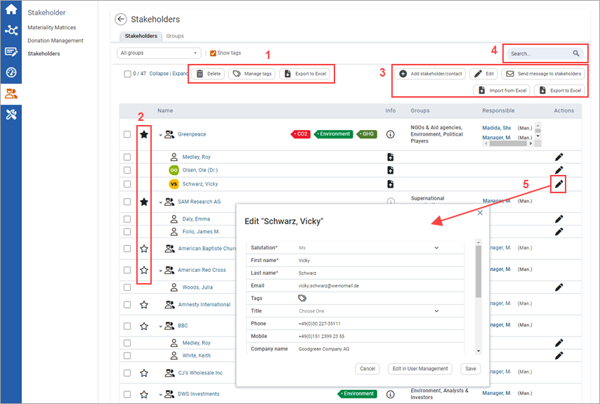
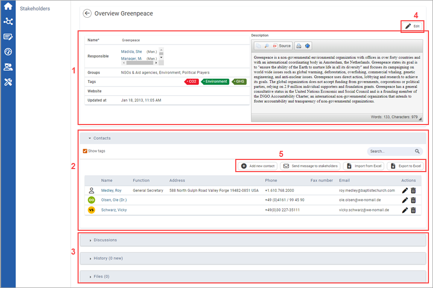
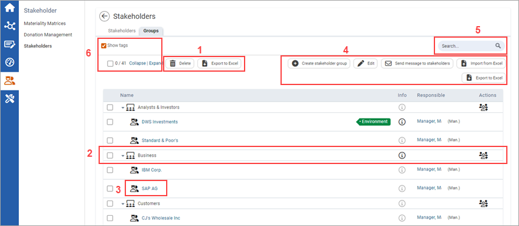

The Stakeholders module allows you to create records of your stakeholders. As well as contact details, you can also store assessments and expectations for criteria that you can define freely.
The table provides you with an overview of all existing stakeholders and contacts. For each, the Name, Groups, Responsible person(s) and the available Actions are displayed. Click  to view the description. Click the name to display the respective stakeholder and edit it.
to view the description. Click the name to display the respective stakeholder and edit it.

| 1 | Click to delete the chosen stakeholders and contacts. Click to manage your tags. To export contacts to Excel, select the appropriate checkboxes and click . |
| 2 | Click to set stakeholders as favorites, which are displayed first in the table. This is a portal-wide feature that affects all users on the system. |
| 3 | Click Use the Excel icons to Export () or Import () the stakeholders and contacts. |
| 4 | Use the Search function to browse through the displayed entries. You can use the drop-down menu to limit the list to specific stakeholders. You can also Collapse and Expand all entries alongside display of the allocated tags by selecting the checkbox. |
| 5 | A stakeholder can have any number of contacts assigned, which are listed below the stakeholder. Click |

| 1 | Here you can edit the Name, Responsibilities and Group assignment, Tags and Website. In addition, you can add a Description. |
| 2 | This panel lists all Contacts for this stakeholder with their name and contact details. If the person also has a user account in the portal, you can click their name to display their profile. |
| 3 | As in many other modules, the Discussions, History and Files functions are available here. |
| 4 | Click |
| 5 | Click |
On the Groups tab, you can create groups to organize your stakeholders.

| 1 | Select the checkboxes in conjunction with |
| 2 | Here you can see the Name of the stakeholder group along with a description and available actions. Click to add a new stakeholder to the group. |
| 3 | Click on the name in a stakeholder's row to display the detail view of a stakeholder and edit the details. |
| 4 | Click The name, description, the assigned tags, and the rights assignment for a stakeholder can also be edited directly from this table. Click Click The Excel icons allow you to Export () and Import () the stakeholders and contacts. |
5 | Use the Search function to browse through the stakeholders and contacts by typing any term into the search field. |
| 6 | Optionally, Collapse or Expand all entries and control if allocated Tags should be displayed. |